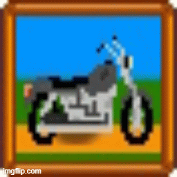

About Me
Building useful things, one project at a time
It started with a Stardew Valley mod. I wanted to change a motorcycle
in a game I loved, figured out how, and realized I wanted to build bigger things.
I'm a self-taught developer learning through hands-on projects, focused on
C#, JavaScript, HTML, and CSS. I like building tools that solve real problems,
then refining them until they feel clearer and easier to use.
As a stay-at-home mom, I'm building my skills around real life, one project at a time.
My goal is to keep growing into a developer who can make useful apps with thoughtful
design and solid fundamentals.
Featured Project
Lore Ledger is a local-first JavaScript app for organizing D&D campaign notes,
characters, maps, and combat tracking in one place.
I built it to solve a problem I kept running into at the table: too many scattered
tools during prep and play, and not enough calm in the middle of a session.
It demonstrates local storage, modular UI patterns, accessibility, data safety,
and practical workflow design. I'm currently expanding it with a D&D 5e
character creator.
What Started It All
Cruiser for the Motorcycle Mod - Continued
My first hands-on modding project. I changed the look of a motorcycle in Stardew Valley and realized
I wanted to keep building bigger things.

View the Stardew Valley mod
Learning
Currently Learning
I'm strengthening my JavaScript, HTML, CSS, and C# fundamentals by applying them to real
projects as I build. I'm also working through freeCodeCamp's Full Stack Developer
curriculum to fill in gaps and keep a steady learning path.